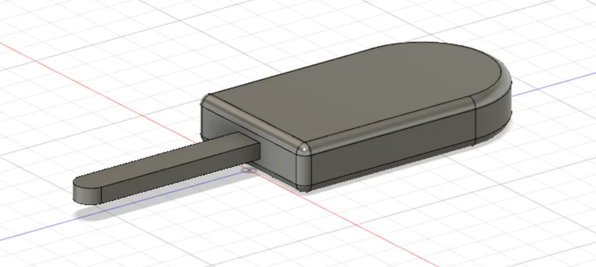

Intro to FUSION 360
Fusion 360 helps students and educators prepare for the future of design. It's the first 3D CAD, CAM, and CAE tool of its kind, connecting your entire product development process into one cloud-based platform. Download the software today, then turn your ideas into reality.
Make a Popsicle
To demonstrate some of the basic Fusion 360 modeling principles, we’ll create a simple popsicle on a stick.
- To create one, click on the “Create Sketch” button on the toolbar, and select which plane you would like to draw on. The view will switch from a 3D to 2D perspective.
To begin, draw the basic popsicle shape with two rectangles and a circle. You can select both shapes from the sketch dropdown or using the ‘R’ and ‘C’ hotkeys, respectively.
Create a dimension by selecting “Sketch Dimensions” or by pressing ‘D’, and then select the line you want to dimension. Double-click on any dimension to resize it. This makes it super easy to specify the exact height of your sketches as well as to go back and change them later if necessary.
Once you’re satisfied, click “Stop Sketch” on the far right of the toolbar to exit sketch mode.

- To begin the operation, press the “Extrude” button on the toolbar (or ‘E’ on your keyboard). Doing so should cause a menu to pop up on the right side of the screen.
The first thing we have to do is select which profiles to extrude. Let’s start with the main popsicle part, excluding the stick. To select more than one profile, just hold the shift key while selecting. Use the arrows or the menu to specify how far to extrude (we chose 15 mm).
Make sure that “Operation” is set to “New Body” and you’re golden! As a side note, the operation setting also has boolean operations such as join, cut, or intersect to create all kinds of shapes.
Next, we need to inflate our popsicle stick. Extrude it the same way, but this time selecting the only the stick part. If you can’t see your sketch anymore, it’s probably hidden. Just unhide it in the browser on the left.
Naturally, we want this part to stick out from the center of the popsicle. Instead of extruding from the profile plane, we’ll offset it by 5 mm, as seen above. We’ll also join it to the main popsicle body so that they’re a single element.
- To achieve a more natural, curved look, we can use the “Fillet” command, which is under the “Modify” drop-down menu. (Or hit ‘F’.) This will apply a curve of specified radius to the edges we select.
Fillet the top and bottom edges (6, in total) of the popsicle by 3 mm, as shown in the picture.
- Make sure to save your project with Ctrl/Cmd+s or via the save button on the top left. Fusion 360 stores all your files in the cloud so they can be accessed from any computer through their website. Within Fusion 360, just open the data panel on the left to view and organize your files.
OTHER TOPICS